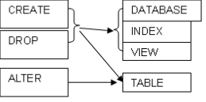

LENGUAJE DE DEFINICIÓN DE DATOS.
El lenguaje de Definición de Datos, es el encargado de DEFINIR toda la estructura de una base de datos relacional. Para esto se apoya en tres instrucciones básicas como son el CREATE, el ALTER y el DROP. Los elementos de las bases de datos que se le puede aplicar estas instrucciones son bases de datos (DATABASE), tablas (TABLE), índices (INDEX) y vistas (VIEW). Miremos esquemáticamente lo anterior:
 Obsérvese que las bases de datos, índices y vistas solo pueden ser creadas (CREATE) o borradas (DROP), mientras que las tablas, pueden también, ser modificadas, mediante la instrucción ALTER.
Creación de Bases de Datos y Tablas
La convención que se va a utilizar para cualquier instrucción es que las PALABRAS RESERVADAS se colocan en letra azul. Ahora, miremos en forma general como sería la instrucción de creación de cualquier elemento:
NOMB_INSTRUCCION ELEMENTO Nomb_Elemento
Tomando el ejemplo de Reservas de Hoteles, que se colocó al principio de esta unidad. Se procede así:
1. Creación de una base de datos Para el ejemplo llamaremos a la bases de datos Reservas_Hoteles
CREATE DATABASE Reservas_Hoteles;
2. Creación de una tabla
CREATE TABLE Municipios
(Cod_Mun INT NOT NULL,
Nombre_Municipio CHAR(30) NOT NULL,
PRIMARY KEY (Cod_Mun));
CREATE TABLE Hoteles (Cod_Hot CHAR(4) NOT NULL,
Hnombre CHAR(30) NOT NULL,
Cod_Mun INT,
PRIMARY KEY (Cod_Hot),
FOREIGN KEY (Cod_Mun) REFERENCES Municipios (Cod_Mun));
Haciendo un análisis hasta aqui, se puede observar que cuando finaliza una sentencia, se coloca punto y como (;). Claro que muchos motores de bases de datos, ya no ponen problema en esto, sino que si la sentencia están bien escrita la ejecuta. Otro punto es que en la definición de la llave foránea, hubo necesidad de Cualificar el campo, debido a que el nombre recibido por código municipio es igual en ambas tablas (Municipios y Hoteles).
CREATE TABLE Huespedes
(Nro_Id_Hues INT NOT NULL,
Nombre_Hues CHAR(50) NOT NULL,
PRIMARY KEY (Nro_Id_Hues));
CREATE TABLE Reservas (Rnum INT NOT NULL,
Fecha_Ini DATE,
Dias_Duracion INT,
Cod_Hot CHAR(4),
Nro_Id_Hues INT,
Nro_Hab CHAR(4),
Fecha_Res DATE,
PRIMARY KEY (Rnum),
FOREIGN KEY (Cod_Hot) REFERENCES Hoteles (Cod_Hot),
FOREIGN KEY (Nro_Id_Hues) REFERENCES Huespedes (Nro_Id_Hues));
Una aspecto a tener en cuenta con la definición de las llaves foráneas, es que la columna a la que se hace referencia, debe llamarse igual como se haya definido en la Tabla., así se observa que, Nro_Id_Hues que se encuentra entre paréntesis se llama exactamente igual a como se definió en la tabla de Huespedes. además obsérvese que se cualificó, debido a que tiene el mismo nombre en la tabla de Reservas y por lo tanto se debe evitarse las ambigüedades.
Creación de Índices
Los índices son los caminos que al motor de las bases de datos se le dan para que los encuentre de forma mas eficiente los datos, de tal forma, que escoja el camino más rápido para dar respuesta a una petición de un usuario. Un criterio fundamental para diseñar los índices, es la frecuencia de consulta de un dato o grupo de datos en una tabla y que no es llave primaria y el tamaño de la tabla. Sin embargo, hay que tener en cuenta que si bien se gana rapidez en la consulta, mientras más índices tenga una tabla, los procesos de inserción, borrado y modificación son mas demorado. De allí, que el administrador de bases de datos requiera mirar la forma como se ejecutó una consulta, una vez que crea un índice, con el fin de observar si el índice fue utilizado por el gestor de consulta, pues si este no fue utilizado, debe ser borrado, ya que no tiene sentido de acuerdo a lo dicho al inicio de este párrafo.
Ejemplo:
CREATE INDEX Nombre_Indice ON Nomb_Tabla(Nombre_Campos1, Nombre_Campo2, ....);
CREATE INDEX Huesped ON Reservas(Nro_Id_Hues);
Modificación de Tablas
Ahora se muestra las sentencias para realizar tres tipos de modificaciones:
1. Adicionar la ciudad a la tabla de HUESPEDES.
ALTER TABLE HUESPEDES ADD Ciudad CHAR (30);
2. Borrar el nùmero de habitaciòn a las RESERVAS.
ALTER TABLE RESERVAS DELL Nto_hab;
3. Modificar el tipo de datos dias de duraciòn en las RESERVAS.
ALTER TABLE RESERVAS MOD Dias_Duracion CHAR (15);
Borrados de Bases de Datos, Tablas, Índices y Vistas
Para el borrado de cualquier elemento de la estructura de una base de datos, incluyendo ella misma, existe la sentencia DROP.
1. Borrado de una base de datos DROP DATABASE RESERVAS_HOTELES;
2. Borrado de una tabla DROP TABLE MUNICIPIOS;
3. Borrado de un índice DROP INDEX HUESPEDES_Nro_Id_Hues;
4. Borrado de una vista DROP VIEW VISTA_RESERVAS;